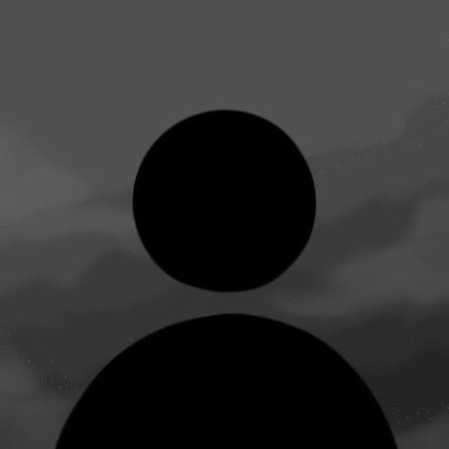

Fernando Coulstyo
Mahasiswa semester 3 Sistem Informasi yang sedang mempelajari dasar-dasar pengembangan web dan desain.

Tugas dan Perkuliahan
| Tugas / Materi | Jenis | Teknologi / Tools |
|---|---|---|
| Perancangan Basis Data | Tugas Kuliah | SQL |
| Studi Kasus Pemrograman Dasar | Tugas Kuliah | VS Code |
| Latihan Desain Antarmuka | Tugas Kuliah | Figma / CorelDraw |
Keahlian dan Minat
- HTML5 Dasar
- CSS Dasar
- Desain Grafis (CorelDraw)
- UI/UX Design (Figma)
- Aksesibilitas dasar: kontras, alt text, urutan heading
Tentang Saya
Saya adalah mahasiswa program studi Sistem Informasi di Medan yang memiliki ketertarikan kuat dalam dunia desain grafis, visual kreatif, dan perancangan antarmuka pengguna (UI/UX). Saat ini, saya sedang aktif mempelajari fondasi dasar pengembangan front-end web menggunakan HTML and CSS untuk menyelaraskan kemampuan desain saya ke dalam lingkungan web.
Dalam proses belajar, saya terbiasa menggunakan tools seperti CorelDraw untuk kebutuhan aset grafis dan Figma untuk pembuatan prototype digital. Saya berfokus pada hasil visual yang rapi, komunikatif, dan mudah dipahami oleh pengguna.
Kontak
Surel: fernandocoulstyo13@gmail.comDomisili: Medan, Sumatera Utara, Indonesia